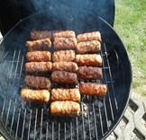
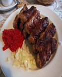

 
Wie bei allen anderen Grillgerichten auch, ist die Frische und Qualität des verwendetet Fleisches von entscheidender Bedeutung für ein gutes Resultat. Die Frische von Fleisch am Stück ist besser einschätzbar als bei bereits gemahlenem Fleisch. Darum kauft man für original bosnische Cevapcici am besten frisches Lamm- und Rindfleisch am Stück und tut es anschließend im Fleischwolf selber wolfen. Nachdem das Fleisch gewolft wurde, gibt man die fein zerriebene (und nicht gehackte) Zwiebel, den ausgepressten Knoblauch, die fein gehackte Petersilie sowie Salz und Paprikapulver dazu, mit dem Pfeffern wird aber noch etwas gewartet. Nachdem man den Hackfleischteig mit den Händen gut durchgeknetet hat, kommt er in einer abgedeckten Schüssel für 24 Stunden in den Kühlschrank, damit sich die Aromen gut entfalten können. Danach wird die Masse gepfeffert und mit den Händen etwa 5 cm lange und 2 cm dicke Cevapcici geformt. Die Röllchen sollten auf keinen Fall größer als ein kleiner Daumen sein – je kleiner, desto besser! In der Zwischenzeit bereitet man den Grill vor. Wenn die Holzkohle von einer weißen Schicht überzogen ist, kommen die Cevapcici direkt über die Glut und werden (je nach Hitze) bei ständigem Wenden etwa 5-7 Minuten lang gegrillt.
Alle enthaltene Bilder dieses Rezeptes sind von Office365 Word und sind daher Lizenzfrei!